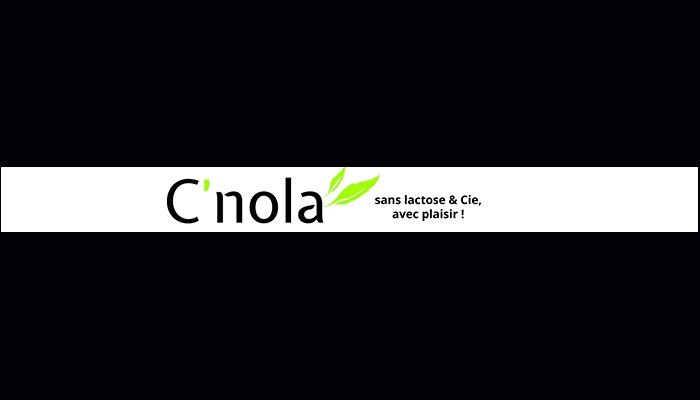

Durant ma premiere année de BTS SIO option SLAM j'ai effectué un stage de 5 semaines dans la strat up Cnola. Cnola est une start up sur paris, spécialisé dans l'alimentation sans lactose.
Présentation de l'entreprise :
"Pour faciliter la vie des personnes qui ont des intolérances alimentaires, j'ai créé C'nola, entreprise qui propose l'achat de produits sans lactose, sans gluten et/ou oeufs des ateliers, des conseils et des recettes pour que vous puissiez à votre tour vivre et bien vivre sans lactose & Cie ! Notre objective est de vous proposer l'environnement que j'aurai voulu avoir lorsque j'ai découvert ma 1ère intolérance alimentaire. Depuis, la farine de blé et les blancs d'oeufs s'ajoutent à la liste.Aujourd'hui mon alimentation est un style de vie, une philosophie et je voudrai partager cela avec vous." Laurence Popoff directrice.
Mission du stage:
Aide à la construction du site web avec le CMS Joomla, Ajout de fonctionnalités, Modification de contenue, Maintenance du site, Mise en place d'outil de surveillances.
Experience accomplis :
Prise en charge d’incidents et de demandes d’assistance liés au domaine de spécialité du candidat. Elaboration de documents relatifs à la production et à la fourniture de services. Productions relatives à la mise en place d’un dispositif de veille technologique et à l’ d’une technologie, d’un composant, d’un outil ou d’une méthode. Étude de l'impact de l'intégration d'un service sur le système informatique. Déploiement d'un service. Participation à un projet. Accompagnement des utilisateurs dans la prise en main d'un service. Suivi et résolution d'incidents. Administration sur site ou à distance des éléments d'un réseau, de serveurs, Développement, utilisation ou adaptation de composants logiciels. Recueil d'informations sur une configuration et ses éléments. Étude d˜une technologie, d'un composant, d'un outil ou d'une méthode.
Technologie utilisée :
CMS Joomla, Extension Prestashop, Extension Formulaire, Wamp serveur, Filezila, Photofiltre
Langage utilisé :
HTML/CSS